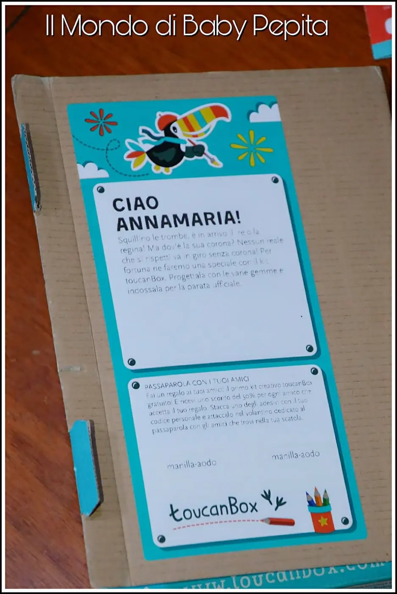
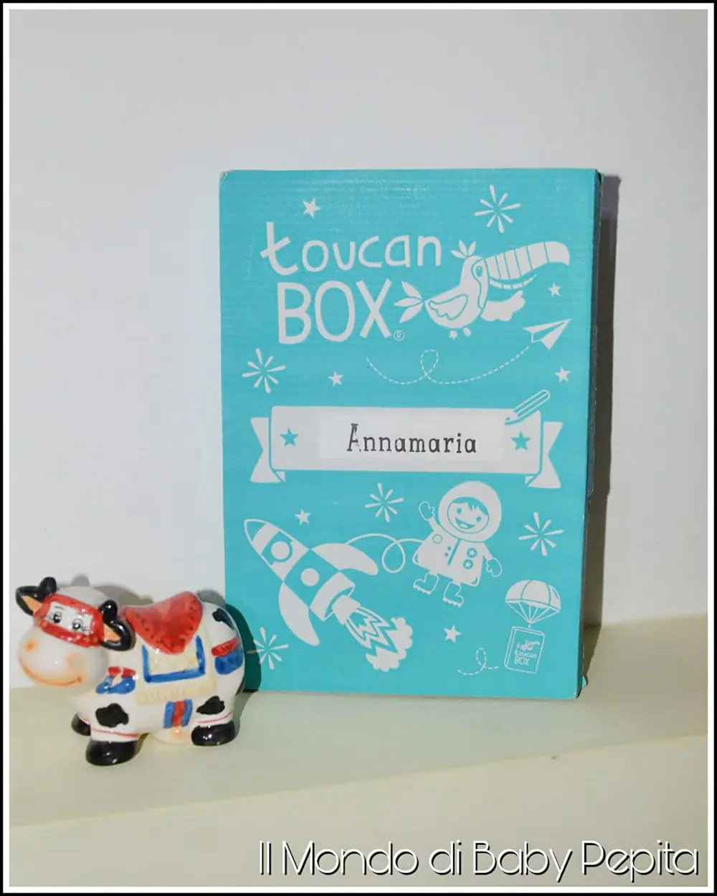
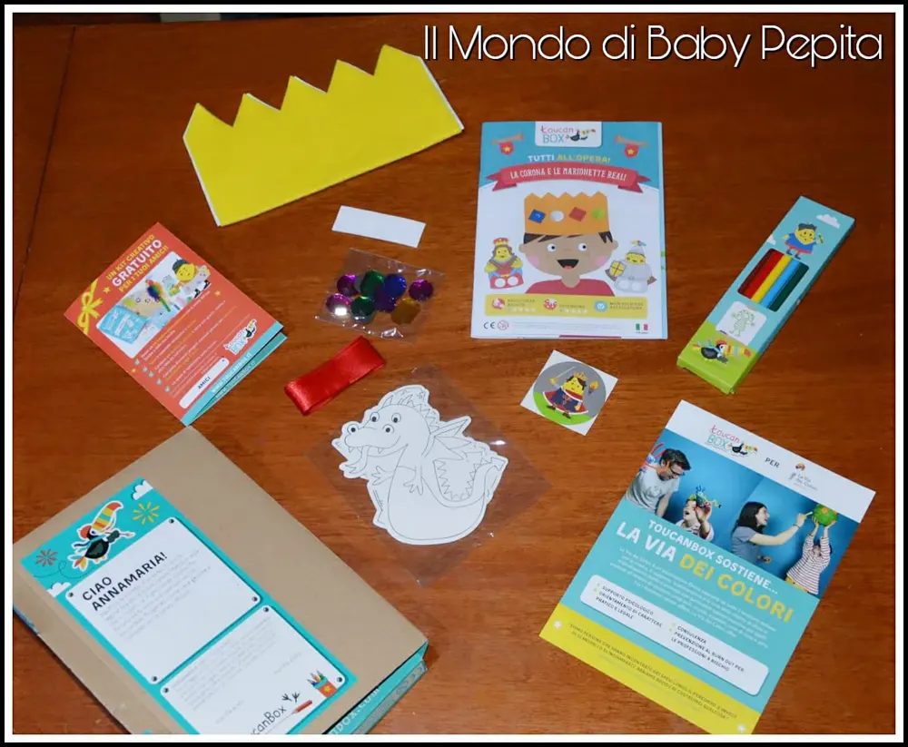
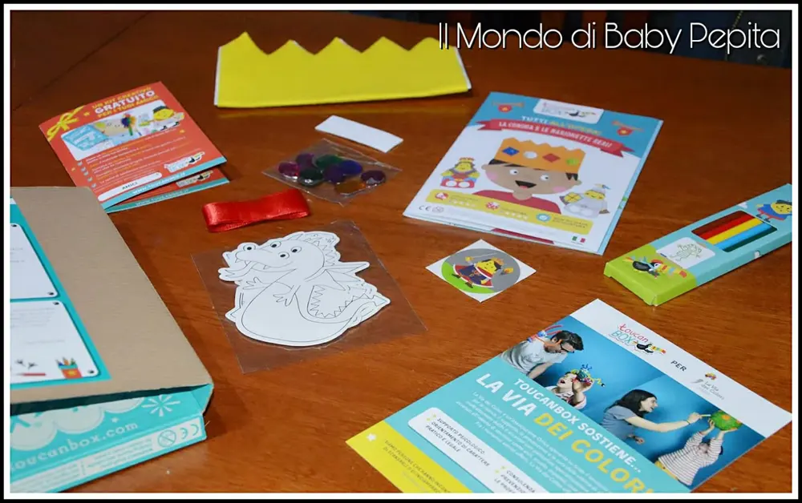

Bambini: ToucanBox - kit creativi
Bambini:Tante cose girano intorno a loro. Molte aziende si adoperano per le loro esigenze e tante altre poi, creano soprattutto per la loro educazione e divertimento.
Oggi voglio infatti farvi vedere un kit della TOUCANBOX.

Un kit di gioco educativo, con pochi euro possiamo passare alcuni momenti con i nostri bambini ed imparare insieme nell'arte del creare. La cosa che mi ha colpito di questa box è anche il fatto che è personalizzato con il nome del vostro bambino/a; il chè renderà già il momento dell'arrivo una gioia ed un coinvolgimento da parte sua.

Il kit è adatto ai bambini dai 3 agli 8 anni di età.
Ci sono 3 carte regalo da scegliere, ovvero 3 pacchetti per quanto riguarda l'abbonamento.
Il pacchetto 6 kit. 31,90 €
Il pacchetto 12 kit. 63,90 €
Il pacchetto 24 kit. 126,90 €
Acquisti dunque una carta regalo e dopodiché ti inviano un codice univoco. Entri sul sito toucanbox.it e inserisci il codice ricevuto, compili il modulo con i dati personali di te e del tuo bambino ed ogni scatola verrà spedita con la frequenza preferita.
Ovviamente l'abbonamento verrà automaticamente disattivato dopo l'ultimo kit ricevuto.
Sbirciando un kit posso dirvi che riceverete:
- materiale necessario per realizzare un progetto manuale
- semplici istruzioni
- un libretto a tema con giochi ricette e pagine sa colorare
- uno sticker collezionabile

Io ho ricevuto questo kit davvero sfizioso e l'ho fatto per mia nipote che ha 8 anni. Si è divertita molto a giocare con questo kit perchè si è sentita coinvolta in un progetto da creare.

Ed io sono stata entusiasta di vedere che questa cosa davvero funziona. Trovo che questa iniziativa sia davvero una fantastica cosa per passare tempo insieme al nostro bambino e soprattutto pedagogico.

Attenzione:potrete anche scegliere di ordinare un kit ogni 2 settimane e pagare 5,95 € ogni volta. E così sceglierete voi stessi se saltare oppure no un kit.
E oggi puoi provarlo GRATIS (solo 1,95€ di spedizione, invece di €7,90)!
Ciascun gioco creativo ? arriva nelle cassetta delle lettere ? e contiene:
?tutto il materiale necessario per completare un lavoretto manuale
? libretto a tema con giochi ricette e tante altre curiosità
?uno sticker collezionabile
Ordina il 1˚ gioco GRATIS (solo €1,95 di spedizione)a questo link ➡️http://bit.ly/2DyuwJm
Se volete dare un'occhiata o/e acquistare